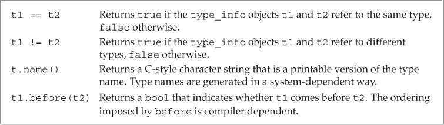

第19章 特殊工具与技术
控制内存分配（Controlling Memory Allocation）
重载new和delete（Overloading new and delete）
使用new表达式时，实际执行了三步操作：
new表达式调用名为operator new（或operator new[]）的标准库函数。该函数分配一块足够大、原始、未命名的内存空间以便存储特定类型的对象（或对象数组）。- 编译器调用对应的构造函数构造这些对象并初始化。
- 对象被分配了空间并构造完成，返回指向该对象的指针。
使用delete表达式时，实际执行了两步操作：
- 对指针所指向的对象（或对象数组）执行对应的析构函数。
- 编译器调用名为
operator delete（或operator delete[]）的标准库函数释放内存空间。
如果程序希望控制内存分配的过程，则需要定义自己的operator new和operator delete函数。编译器会用自定义版本替换标准库版本。
程序可以在全局作用域中定义operator new和operator delete函数，也可以将其定义为成员函数。编译器发现new或delete表达式后，将在程序中查找可供调用的operator函数。如果被分配或释放的对象是类类型，编译器会先在类及其基类的作用域中查找。如果该类含有operator成员，则表达式会调用这些成员。否则编译器会继续在全局作用域查找。如果找到自定义版本，则使用该版本的函数。如果没找到，则使用标准库定义的版本。
可以使用作用域运算符令new或delete表达式忽略定义在类中的函数，直接执行全局作用域版本。
标准库定义了operator new和operator delete函数的8个重载版本，其中前4个版本可能抛出bad_alloc异常，后4个版本不会抛出异常。重载这些运算符时，必须使用关键字noexcept指定其不抛出异常。
// these versions might throw an exception
void *operator new(size_t); // allocate an object
void *operator new[](size_t); // allocate an array
void *operator delete(void*) noexcept; // free an object
void *operator delete[](void*) noexcept; // free an array
// versions that promise not to throw
void *operator new(size_t, nothrow_t&) noexcept;
void *operator new[](size_t, nothrow_t&) noexcept;
void *operator delete(void*, nothrow_t&) noexcept;
void *operator delete[](void*, nothrow_t&) noexcept
nothrow_t类型是定义在头文件new中的一个结构体，这个类型不包含任何成员。头文件new还定义了一个名为nothrow的const对象，用户可以通过这个对象请求new的非抛出版本。
将operator函数定义为类的成员时，它们是隐式静态的，无须显式地声明static。因为operator new用在对象构造之前，operator delete用在对象销毁之后，所以它们必须是静态成员，而且不能操纵类的任何数据成员。
operator new和operator new[]函数的返回类型必须是void*，第一个形参的类型必须是size_t且不能有默认实参。编译器调用operator new时，用存储指定类型对象所需的字节数初始化size_t形参；调用operator new[]时，传入函数的则是存储数组中所有元素所需的空间。
自定义operator new函数时可以为它提供额外的形参，用到这些自定义函数的new表达式必须使用new的定位形式传递参数。下面这种形式的new函数只供标准库使用，不能被用户重定义：
void *operator new(size_t, void*); // this version may not be redefined
operator delete和operator delete[]函数的返回类型必须是void，第一个形参的类型必须是void*。函数被调用时，编译器会用指向待释放内存的指针来初始化void*形参。
将operator delete或operator delete[]定义为类的成员时，可以包含另一个类型为size_t的形参。该形参的初始值是第一个形参所指向对象的字节数。size_t形参可用于删除继承体系中的对象。如果基类有一个虚析构函数，则传递给operator delete的字节数会因待删除指针所指向对象的动态类型不同而有所区别。实际运行的operator delete函数版本也由对象的动态类型决定。
malloc函数接受一个表示待分配字节数的size_t参数，返回指向分配空间的指针，或者返回0以表示分配失败。free函数接受一个void*参数，它是malloc返回的指针的副本，free将相关内存返回给系统。调用free(0)没有任何意义。
void *operator new(size_t size)
{
if (void *mem = malloc(size))
return mem;
else
throw bad_alloc();
}
void operator delete(void *mem) noexcept
{
free(mem);
}
定位new表达式（Placement new Expressions）
在C++的早期版本中，allocator类还不是标准库的一部分。如果程序想分开内存分配和初始化过程，需要直接调用operator new和operator delete函数。它们类似allocator类的allocate和deallocate成员，负责分配或释放内存空间，但不会构造或销毁对象。
不能使用allocator类的construct函数在operator new分配的内存空间中构造对象，而应该使用定位new表达式构造。
new (place_address) type
new (place_address) type (initializers)
new (place_address) type [size]
new (place_address) type [size] { braced initializer list }
其中place_address是一个指针。initializers是一个以逗号分隔的初始值列表（可能为空），该列表用于构造新分配的对象。
当仅通过一个地址值调用定位new时，它会使用operator new(size_t, void*)函数（用户无法重载的版本）。该函数不分配任何内存，直接返回指针形参。然后由new表达式负责在指定的地址初始化对象。
传递给construct函数的指针必须指向同一个allocator对象分配的空间，但是传递给定位new的指针无须指向operator new分配的内存，甚至不需要指向动态内存。
调用析构函数会销毁对象，但不会释放内存。如果需要的话，可以重新使用该空间。
运行时类型识别（Run-Time Type Identification）
运行时类型识别（RTTI）的功能由两个运算符实现：
typeid运算符，用于返回表达式的类型。dynamic_cast运算符，用于将基类的指针或引用安全地转换为派生类的指针或引用。
RTTI运算符适用于以下情况：想通过基类对象的指针或引用执行某个派生类操作，并且该操作不是虚函数。
dynamic_cast运算符（The dynamic_cast Operator）
dynamic_cast运算符的形式如下：
dynamic_cast<type*>(e)
dynamic_cast<type&>(e)
dynamic_cast<type&&>(e)
其中type是一个类类型，并且通常情况下该类型应该含有虚函数。在第一种形式中，e必须是一个有效指针；在第二种形式中，e必须是一个左值；在第三种形式中，e不能是左值。在所有形式中，e的类型必须符合以下条件之一：
- e是type的公有派生类。
- e是type的公有基类。
- e和type类型相同。
如果条件符合，则类型转换成功，否则转换失败。转换失败可能有两种结果：
如果
dynamic_cast语句的转换目标是指针类型，则结果为0。if (Derived *dp = dynamic_cast<Derived*>(bp)) { // use the Derived object to which dp points } else { // bp points at a Base object // use the Base object to which bp points }如果
dynamic_cast语句的转换目标是引用类型，则抛出bad_cast异常（定义在头文件typeinfo中）。void f(const Base &b) { try { const Derived &d = dynamic_cast<const Derived&>(b); // use the Derived object to which b referred } catch (bad_cast) { // handle the fact that the cast failed } }
在条件判断部分执行dynamic_cast可以确保类型转换和结果检查在同一条表达式中完成。
可以对一个空指针执行dynamic_cast，结果是所需类型的空指针。
typeid运算符（The typeid Operator）
typeid表达式的形式是typeid(e)，其中e可以是任意表达式或类型名称。typeid的结果是一个指向常量对象的引用，该对象的类型是标准库type_info（定义在头文件typeinfo中）或type_info的公有派生类型。
typeid可以作用于任何类型的表达式，其中的顶层const会被忽略。如果表达式是一个引用，则typeid返回该引用所指对象的类型。当typeid作用于数组或函数时，不会执行向指针的标准类型转换。
当typeid的运算对象不属于类类型或者是一个不包含任何虚函数的类时，typeid返回其静态类型。而当运算对象是至少包含一个虚函数的类的左值时，typeid的结果直到运行期间才会确定。
通常情况下，typeid用于比较两条表达式的类型是否相同，或者比较一条表达式的类型是否与指定类型相同。
Derived *dp = new Derived;
Base *bp = dp; // both pointers point to a Derived object
// compare the type of two objects at run time
if (typeid(*bp) == typeid(*dp))
{
// bp and dp point to objects of the same type
}
// test whether the run-time type is a specific type
if (typeid(*bp) == typeid(Derived))
{
// bp actually points to a Derived
}
typeid应该作用于对象。当typeid作用于指针时，返回的结果是该指针的静态编译类型。
// test always fails: the type of bp is pointer to Base
if (typeid(bp) == typeid(Derived))
{
// code never executed
}
只有当类型含有虚函数时，编译器才会对typeid的表达式求值以确定返回类型。对于typeid(*p)，如果指针p所指向的类型不包含虚函数，则p可以是一个无效指针。否则*p会在运行期间求值，此时p必须是一个有效指针。如果p是空指针，typeid(*p)会抛出bad_typeid异常。
使用RTTI（Using RTTI）
使用RTTI可以为具有继承关系的类实现相等运算符。
相等运算符的形参是基类的引用。
class Base
{
friend bool operator==(const Base&, const Base&);
public:
// interface members for Base
protected:
virtual bool equal(const Base&) const;
// data and other implementation members of Base
};
class Derived: public Base
{
public:
// other interface members for Derived
protected:
bool equal(const Base&) const;
// data and other implementation members of Derived
};
使用typeid检查两个运算对象的类型是否一致，类型一致才会继续判断每个数据成员的取值是否相同。
bool operator==(const Base &lhs, const Base &rhs)
{
// returns false if typeids are different; otherwise makes a virtual call to equal
return typeid(lhs) == typeid(rhs) && lhs.equal(rhs);
}
每个类定义的equal函数负责比较类型自己的数据成员。equal函数的形参都是基类的引用，但是在比较之前需要先把运算对象转换成自己的类型。
bool Derived::equal(const Base &rhs) const
{
// we know the types are equal, so the cast won't throw
auto r = dynamic_cast<const Derived&>(rhs);
// do the work to compare two Derived objects and return the result
}
bool Base::equal(const Base &rhs) const
{
// do whatever is required to compare to Base objects
}
type_info类（The type_info Class）
type_info类的精确定义会根据编译器的不同而略有差异。但是C++规定type_info必须定义在头文件typeinfo中，并且至少提供以下操作：

type_info类一般是作为一个基类出现，所以它还应该提供一个公有虚析构函数。当编译器希望提供额外的类型信息时，通常在type_info的派生类中完成。
type_info类没有默认构造函数，而且它的拷贝和移动构造函数以及赋值运算符都被定义为删除的。创建type_info对象的唯一方式就是使用typeid运算符。
对于某种给定类型来说，name成员的返回值因编译器而异并且不一定与在程序中使用的名字一致。对于name返回值的唯一要求就是类型不同则返回的字符串必须有所区别。
枚举类型（Enumerations）
和类一样，每个枚举类型都定义了一种新的类型。枚举属于字面值常量类型。
C++包含两种枚举：
限定作用域的枚举（scoped enumeration，C++11新增）。定义形式是关键字
enum class（或enum struct）后接枚举类型名字以及用花括号包围、以逗号分隔的枚举成员（enumerator）列表。enum class open_modes { input, output, append };不限定作用域的枚举（unscoped enumeration）。定义时省略关键字
class（或struct），枚举类型名字是可选的。C++// unscoped enumeration enum color { red, yellow, green }; // unnamed, unscoped enum enum { floatPrec = 6, doublePrec = 10, double_doublePrec = 10 };如果枚举是未命名的，则只能在定义该枚举时一同定义它的对象。
在限定作用域的枚举类型中，枚举成员的名字遵循常规作用域规则，并且在枚举类型的作用域外是不可访问的。与之相反，在不限定作用域的枚举类型中，枚举成员的作用域与枚举类型本身的作用域相同。
enum color { red, yellow, green }; // unscoped enumeration
enum stoplight { red, yellow, green }; // error: redefines enumerators
enum class peppers { red, yellow, green }; // ok: enumerators are hidden
color eyes = green; // ok: enumerators are in scope for an unscoped enumeration
peppers p = green; // error: enumerators from peppers are not in scope
// color::green is in scope but has the wrong type
color hair = color::red; // ok: we can explicitly access the enumerators
peppers p2 = peppers::red; // ok: using red from peppers
默认情况下，枚举值从0开始，依次加1。也可以直接为枚举成员指定特定的值。
enum class intTypes
{
charTyp = 8, shortTyp = 16, intTyp = 16,
longTyp = 32, long_longTyp = 64
};
枚举值可以不唯一。如果没有显式提供初始值，则当前枚举成员的值等于之前枚举成员的值加1。
枚举成员是const的，因此在初始化枚举成员时提供的初始值必须是常量表达式。
可以在任何需要常量表达式的地方使用枚举成员。如：
- 定义枚举类型的
constexpr变量。 - 将枚举类型对象作为
switch语句的表达式，而将枚举值作为case标签。 - 将枚举类型作为非类型模板形参使用。
- 在类的定义中初始化枚举类型的静态数据成员。
初始化枚举对象或者给枚举对象赋值时，必须使用该类型的一个枚举成员或者该类型的另一个对象。即使某个整型值恰好与枚举成员的值相等，也不能用其初始化枚举对象。
open_modes om = 2; // error: 2 is not of type open_modes
om = open_modes::input; // ok: input is an enumerator of open_modes
不限定作用域的枚举类型对象或枚举成员能自动转换成整型。
int i = color::red; // ok: unscoped enumerator implicitly converted to int
int j = peppers::red; // error: scoped enumerations are not implicitly converted
枚举是由某种整数类型表示的。C++11中，可以在枚举名字后面指定用来表示枚举成员的整型类型。
enum intValues : unsigned long long
{
/*...*/
};
如果没有指定枚举的潜在类型，则默认情况下限定作用域的枚举成员类型是int。不限定作用域的枚举成员不存在默认类型。
C++11中可以提前声明枚举。枚举的前置声明必须指定（无论隐式或显式）其成员的类型。
// forward declaration of unscoped enum named intValues
enum intValues : unsigned long long; // unscoped, must specify a type
enum class open_modes; // scoped enums can use int by default
类成员指针（Pointer to Class Member）
成员指针（pointer to member）是指可以指向类的非静态成员的指针。
成员指针的类型包括类的类型和成员的类型。初始化成员指针时，会令其指向类的某个成员，但是不指定该成员所属的对象。直到使用成员指针时，才提供成员所属的对象。
数据成员指针（Pointers to Data Members）
声明成员指针时必须在*前添加classname::以表示当前定义的指针可以指向classname的成员。
class Screen
{
public:
typedef std::string::size_type pos;
char get_cursor() const { return contents[cursor]; }
char get() const;
char get(pos ht, pos wd) const;
private:
std::string contents;
pos cursor;
pos height, width;
}
// pdata can point to a string member of a const (or non const) Screen object
const string Screen::*pdata;
初始化或者给成员指针赋值时，需要指定它所指向的成员。
pdata = &Screen::contents;
成员指针使用.*和->*来获得其指向对象的成员。
Screen myScreen, *pScreen = &myScreen;
// .* dereferences pdata to fetch the contents member from the object myScreen
auto s = myScreen.*pdata;
// ->* dereferences pdata to fetch contents from the object to which pScreen points
s = pScreen->*pdata;
常规的访问控制规则对成员指针同样有效。数据成员一般是私有的，因此通常不能直接获得数据成员的指针。如果类希望外部代码能访问它的私有数据成员，可以定义一个函数，令其返回指向私有成员的指针。
成员函数指针（Pointers to Member Functions）
类似于其他函数指针，指向成员函数的指针也需要指定目标函数的返回类型和形参列表。如果成员函数是const成员或引用成员，则指针也必须包含const或引用限定符。
// pmf is a pointer that can point to a Screen member function that is const
// that returns a char and takes no arguments
auto pmf = &Screen::get_cursor;
如果成员函数存在重载问题，则必须显式声明指针指向的函数类型。
char (Screen::*pmf2)(Screen::pos, Screen::pos) const;
pmf2 = &Screen::get;
和普通函数指针不同，在成员函数和指向该成员的指针之间不存在自动转换规则。
// pmf points to a Screen member that takes no arguments and returns char
pmf = &Screen::get; // must explicitly use the address-of operator
pmf = Screen::get; // error: no conversion to pointer for member functions
成员函数指针使用.*和->*来调用类的成员函数。
Screen myScreen, *pScreen = &myScreen;
// call the function to which pmf points on the object to which pScreen points
char c1 = (pScreen->*pmf)();
// passes the arguments 0, 0 to the two-parameter version of get on the object myScreen
char c2 = (myScreen.*pmf2)(0, 0);
可以使用类型别名来增强含有成员指针的代码的可读性。
将成员函数用作可调用对象（Using Member Functions as Callable Objects）
成员指针不是一个可调用对象，不支持函数调用运算符。
auto fp = &string::empty; // fp points to the string empty function
// error: must use .* or ->* to call a pointer to member
find_if(svec.begin(), svec.end(), fp);
从成员函数指针获取可调用对象的一种方法是使用标准库模板function。
function<bool (const string&)> fcn = &string::empty;
find_if(svec.begin(), svec.end(), fcn);
定义一个function对象时，必须指定该对象所能表示的函数类型（即可调用对象的形式）。如果可调用对象是一个成员函数，则第一个形参必须表示该成员是在哪个对象上执行的。
使用标准库功能mem_fn（定义在头文件functional中）可以让编译器推断成员的类型。和function一样，mem_fn可以从成员指针生成可调用对象。但mem_fn可以根据成员指针的类型推断可调用对象的类型，无须显式指定。
find_if(svec.begin(), svec.end(), mem_fn(&string::empty));
mem_fn生成的可调用对象可以通过对象和指针调用。
auto f = mem_fn(&string::empty); // f takes a string or a string*
f(*svec.begin()); // ok: passes a string object; f uses .* to call empty
f(&svec[0]); // ok: passes a pointer to string; f uses .-> to call empty
嵌套类（Nested Classes）
一个类可以定义在另一个类的内部，前者被称为嵌套类或嵌套类型（nested type）。嵌套类通常用于定义作为实现部分的类。
外层类的对象和嵌套类的对象是相互独立的。在嵌套类对象中不包含任何外层类定义的成员，在外层类对象中也不包含任何嵌套类定义的成员。
嵌套类的名字在外层类作用域中是可见的，在外层类作用域之外不可见。
外层类对嵌套类的成员没有特殊的访问权限，嵌套类对外层类的成员也没有特殊的访问权限。
嵌套类在其外层类中定义了一个类型成员。和其他成员类似，该类型的访问权限由外层类的访问说明符决定。
嵌套类必须声明在类的内部，但是可以定义在类的内部或外部。在外层类之外定义嵌套类时，必须用外层类的名字限定嵌套类的名字。
class TextQuery
{
class QueryResult; // nested class to be defined later
};
// we're defining the QueryResult class that is a member of class TextQuery
class TextQuery::QueryResult
{
/*...*/
};
在嵌套类在其外层类之外完成真正的定义之前，它都是一个不完全类型。
union：一种节省空间的类（union: A Space-Saving Class）
联合（union）是一种特殊的类。一个联合可以有多个数据成员，但是在任意时刻只有一个数据成员可以有值。给联合的某个成员赋值之后，其他成员会变为未定义状态。分配给联合对象的存储空间至少要能容纳它的最大数据成员。
联合不能包含引用类型的成员。在C++11中，含有构造函数或析构函数的类类型也可以作为联合的成员类型。
联合可以为其成员指定public、protected和private等保护标记。默认情况下，联合的成员都是公有的。
联合可以定义包括构造函数和析构函数在内的成员函数。但是由于联合既不能继承自其他类，也不能作为基类使用，所以在联合中不能含有虚函数。
定义联合时，首先是关键字union，随后是该联合的名字（可选）以及在花括号内的一组成员声明。
// objects of type Token have a single member, which could be of any of the listed types
union Token
{
// members are public by default
char cval;
int ival;
double dval;
};
默认情况下，联合是未初始化的。可以像显式初始化聚合类一样显式初始化联合，提供的初始值会被用于初始化第一个成员。
Token first_token = { 'a' }; // initializes the cval member
可以使用通用的成员访问运算符访问联合对象的成员。
last_token.cval = 'z';
pt->ival = 42;
匿名联合（anonymous union）是一个未命名的联合，并且在右花括号和分号之间没有任何声明。一旦定义了一个匿名联合，编译器就会自动地为该联合创建一个未命名的对象。在匿名联合的定义所在的作用域内，该联合的成员都是可以直接访问的。
union
{ // anonymous union
char cval;
int ival;
double dval;
}; // defines an unnamed object, whose members we can access directly
cval = 'c'; // assigns a new value to the unnamed, anonymous union object
ival = 42; // that object now holds the value 42
匿名联合不能包含protected和private成员，也不能定义成员函数。
C++的早期版本规定，在联合中不能含有定义了构造函数或拷贝控制成员的类类型成员。C++11取消了该限制。但是如果联合的成员类型定义了自己的构造函数或拷贝控制成员，该联合的用法会比只含有内置类型成员的联合复杂得多。
- 当联合只包含内置类型的成员时，可以使用普通的赋值语句改变联合的值。但是如果想将联合的值改为类类型成员对应的值，或者将类类型成员的值改为一个其他值，则必须构造或析构该类类型的成员。
- 当联合只包含内置类型的成员时，编译器会按照成员顺序依次合成默认构造函数或拷贝控制成员。但是如果联合含有类类型成员，并且该类型自定义了默认构造函数或拷贝控制成员，则编译器会为该联合合成对应的版本并将其声明为删除的。
对于联合来说，构造或销毁类类型成员的操作非常复杂。通常情况下，可以把含有类类型成员的联合内嵌在另一个类中，这个类可以管理并控制与联合的类类型成员相关的状态转换。
局部类（Local Classes）
类可以定义在某个函数的内部，这种类被称为局部类。局部类定义的类型只能在定义它的作用域内可见。
局部类的所有成员（包括成员函数）都必须完整定义在类的内部，因此局部类的作用与嵌套类相比相差很远。
局部类中不允许声明静态数据成员。
局部类只能访问外层作用域定义的类型名、静态变量以及枚举成员，不能使用普通局部变量。
int a, val;
void foo(int val)
{
static int si;
enum Loc { a = 1024, b };
// Bar is local to foo
struct Bar
{
Loc locVal; // ok: uses a local type name
int barVal;
void fooBar(Loc l = a) // ok: default argument is Loc::a
{
barVal = val; // error: val is local to foo
barVal = ::val; // ok: uses a global object
barVal = si; // ok: uses a static local object
locVal = b; // ok: uses an enumerator
}
};
// . . .
}
常规的访问保护规则对于局部类同样适用。外层函数对局部类的私有成员没有任何访问特权。局部类可以将外层函数声明为友元。
可以在局部类的内部再嵌套一个类。此时嵌套类的定义可以出现在局部类之外，不过嵌套类必须定义在与局部类相同的作用域中。
void foo()
{
class Bar
{
public:
class Nested; // declares class Nested
};
// definition of Nested
class Bar::Nested
{
};
}
局部类内的嵌套类也是一个局部类，必须遵循局部类的各种规定。
固有的不可移植的特性（Inherently Nonportable Features）
位域（Bit-fields）
类可以将其非静态数据成员定义成位域，在一个位域中含有一定数量的二进制位。当程序需要向其他程序或硬件设备传递二进制数据时，通常会使用位域。
位域的声明形式是在成员名字之后紧跟一个冒号和一个常量表达式，该表达式用于指定成员所占的二进制位数。
位域的类型必须是整型或枚举类型。因为带符号位域的行为是由具体实现确定的，所以通常情况下使用无符号类型保存位域。位域类型的大小不能小于位域结构的总大小。
struct Descriptor
{
// error: should use unsigned long long
unsigned int LimitLow : 16;
unsigned int BaseLow : 24;
unsigned int Attribute : 16;
unsigned int BaseHigh : 8;
}
定义位域时建议结合#pragma pack指令将结构体对齐值修改为1，防止数据结构错位。
// 保存原始对齐值，设置新对齐
#pragma pack(push, 1)
// 结构体定义……
// 恢复原始对齐值
#pragma pack(pop)
位域成员按定义顺序在内存中由低地址向高地址排列，具体布局与机器相关。
取地址符&不能作用于位域，因此任何指针都无法指向类的位域。
如果可能的话，类内部连续定义的位域会压缩在同一整数的相邻位，从而提供存储压缩。
访问位域的方式与访问类的其他数据成员的方式类似。操作超过1位的位域时，通常会使用内置的位运算符。
File &File::open(File::modes m)
{
mode |= READ; // set the READ bit by default
// other processing
if (m & WRITE) // if opening READ and WRITE
// processing to open the file in read/write mode
return *this;
}
volatile限定符（volatile Qualifier）
当对象的值可能在程序的控制或检测之外被改变时（如子线程），应该将该对象声明为volatile。关键字volatile的作用是告知编译器不要优化这样的对象。
volatile的确切含义与机器有关，只能通过查阅编译器文档来理解。要想让一个使用了volatile的程序在移植到新机器或新编译器后仍然有效，通常需要对该程序进行一些修改。
volatile的用法和const类似，都是对类型的额外修饰。二者相互之间并没有影响。
volatile int display_register; // int value that might change
volatile Task *curr_task; // curr_task points to a volatile object
volatile int iax[max_size]; // each element in iax is volatile
类可以将成员函数定义为volatile的。volatile对象只能调用volatile成员函数。
volatile和指针的关系类似const。可以声明volatile指针、指向volatile对象的指针和指向volatile对象的volatile指针。
volatile int v; // v is a volatile int
int *volatile vip; // vip is a volatile pointer to int
volatile int *ivp; // ivp is a pointer to volatile int
// vivp is a volatile pointer to volatile int
volatile int *volatile vivp;
int *ip = &v; // error: must use a pointer to volatile
*ivp = &v; // ok: ivp is a pointer to volatile
vivp = &v; // ok: vivp is a volatile pointer to volatile
不能使用合成的拷贝/移动构造函数和赋值运算符初始化volatile对象或者给volatile对象赋值。合成的成员接受的形参类型是非volatile常量引用，不能把非volatile引用绑定到volatile对象上。
如果类需要拷贝、移动或赋值它的volatile对象，则必须自定义拷贝或移动操作。
class Foo
{
public:
Foo(const volatile Foo&); // copy from a volatile object
// assign from a volatile object to a nonvolatile object
Foo& operator=(volatile const Foo&);
// assign from a volatile object to a volatile object
Foo& operator=(volatile const Foo&) volatile;
// remainder of class Foo
};
链接指示：extern "C"（Linkage Directives：extern "C"）
C++程序有时需要调用使用其他语言编写的函数，最常见的是调用C语言函数。其他语言中的函数名字也必须在C++中进行声明。对于这些函数，编译器检查其调用的方式与处理普通C++函数的方式相同，但是生成的代码有所区别。C++使用链接指示指出任意非C++函数所用的语言。
链接指示有单个形式和复合形式，其不能出现在类定义或函数定义的内部。同样的链接指示必须出现在函数的每个声明处。
// illustrative linkage directives that might appear in the C++ header <cstring>
// single-statement linkage directive
extern "C" size_t strlen(const char *);
// compound-statement linkage directive
extern "C"
{
int strcmp(const char*, const char*);
char *strcat(char*, const char*);
}
链接指示包含关键字extern、字符串字面值常量和一个函数声明。其中的字符串字面值常量指出了编写函数所用的语言。
复合形式的链接指示可以应用于整个头文件。当一个#include指示被放置在复合链接指示的花括号中时，头文件中的所有函数声明都会被认为是由链接指示的语言编写的。链接指示可以嵌套，因此如果头文件包含自带链接指示的函数，该函数不会受到影响。
// compound-statement linkage directive
extern "C"
{
#include <string.h> // C functions that manipulate C-style strings
}
C++从C语言继承的标准库函数可以定义成C函数，但并非必须。选择使用C还是C++实现C标准库，是由每个C++实现决定的。
编写函数所使用的语言是函数类型的一部分。因此对于使用链接指示定义的函数来说，它的每个声明都必须使用相同的链接指示，而且指向这类函数的指针也必须使用与函数本身一样的链接指示。
// pf points to a C function that returns void and takes an int
extern "C" void (*pf)(int);
指向C函数的指针与指向C++函数的指针是不同的类型，两者不能相互赋值或初始化（少数C++编译器支持这种赋值操作并将其视为对语言的扩展，但是从严格意义上来说它是非法的）。
void (*pf1)(int); // points to a C++ function
extern "C" void (*pf2)(int); // points to a C function
pf1 = pf2; // error: pf1 and pf2 have different types
链接指示不仅对函数本身有效，对作为返回类型或形参类型的函数指针也有效。所以如果希望给C++函数传入指向C函数的指针，必须使用类型别名。
// f1 is a C function; its parameter is a pointer to a C function
extern "C" void f1(void(*)(int));
// FC is a pointer to a C function
extern "C" typedef void FC(int);
// f2 is a C++ function with a parameter that is a pointer to a C function
void f2(FC *);
通过链接指示定义函数，可以令C++函数在其他语言编写的程序中可用。编译器会为该函数生成适合于指定语言的代码。
// the calc function can be called from C programs
extern "C" double calc(double dparm) { /* ... */ }
如果需要在C和C++中编译同一个源文件，可以在编译C++版本时使用预处理定义__cplusplus。
# ifdef __cplusplus
// ok: we're compiling C++
extern "C"
# endif
int strcmp(const char*, const char*);
链接指示与重载函数的相互作用依赖于目标语言。C语言不支持函数重载，所以一个C链接指示只能用于说明一组重载函数中的某一个。
// error: two extern "C" functions with the same name
extern "C" void print(const char*);
extern "C" void print(int);